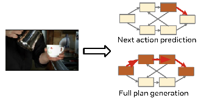
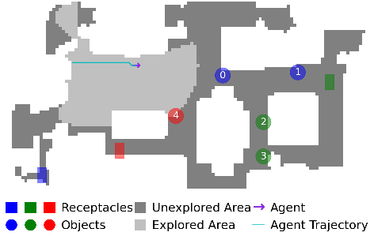
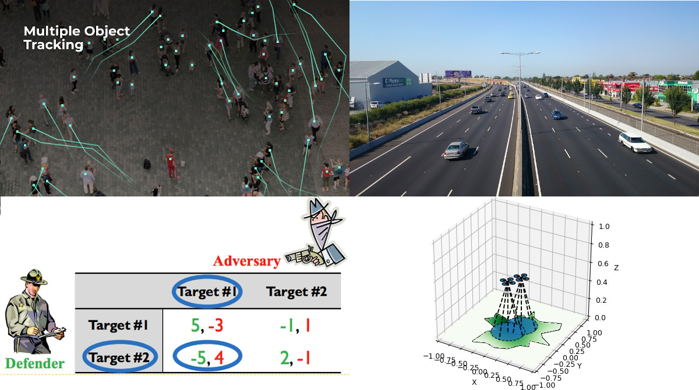
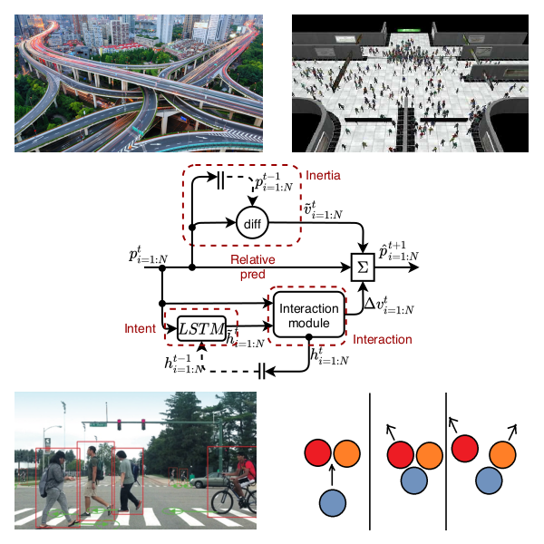
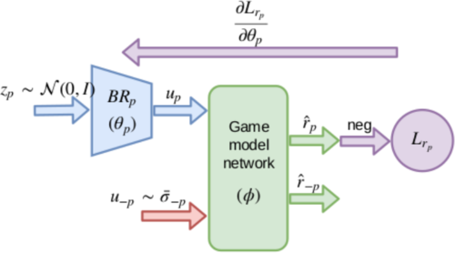
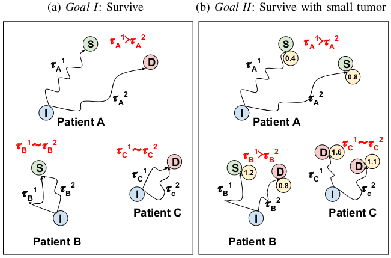
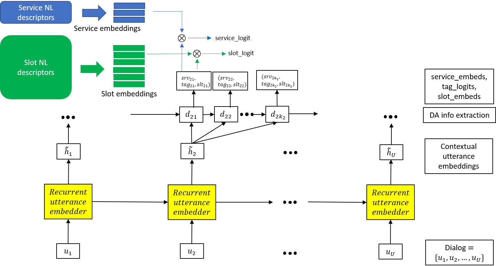
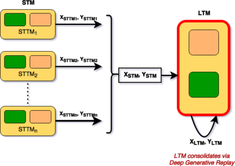
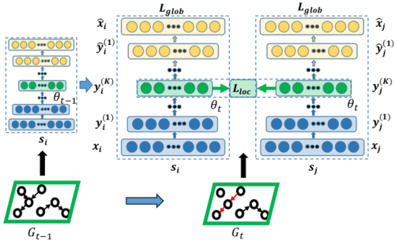

Research & Publications
Learning and Planning for Embodied AI Agents


Learning in Multi-agent Systems



- Policy Learning for Continuous Space Security Games using Neural NetworksNitin Kamra, Umang Gupta, Fei Fang, Yan Liu and Milind TambeAAAI Conference on Artificial Intelligence (AAAI), February 2018
- Handling Continuous Space Security Games with Neural NetworksNitin Kamra, Fei Fang, Debarun Kar, Yan Liu and Milind TambeIJCAI International Workshop on A.I. in Security (IWAISe), August 2017
Machine Learning for Healthcare

Multi-robot Systems


- A mixed integer programming model for timed deliveries in multirobot systemsNitin Kamra and Nora AyanianIEEE International Conference on Automation Science and Engineering (CASE), August 2015
- RF-Based Relative Localization for Robot SwarmsWolfgang Hoenig and Nitin KamraProject, Spring 2015
Natural Language Understanding

- Towards Zero-shot Dialog Act ClassificationNitin Kamra, Daniel Elkind and Angeliki MetallinouAlexa Natural Understanding, Amazon. Summer 2020
- Correction of Speech Recognition on Repetitive QueriesPinar Donmez Ediz, Ranjitha Kulkarni, Shawn Chang and Nitin KamraUS patent 10,650,811 -- Issued May 12, 2020Microsoft AI and Research, Sunnyvale CA, Summer 2017
Miscellaneous



- DynGEM: Deep Embedding Method for Dynamic GraphsNitin Kamra*, Palash Goyal*, Xinran He and Yan LiuIJCAI International Workshop on Representation Learning for Graphs (ReLiG), August 2017
- Parallel Gradient Descent for Multilayer Feedforward Neural NetworksNitin Kamra, Palash Goyal, Sungyong Seo and Vasilis ZoisProject, Spring 2016
- Predicting Rainfall with Polarimetric Radar DataNitin Kamra and James PreissKaggle Competition, Fall 2015
- Output Power Maximization in Energy Harvesting ApplicationsNitin Kamra and Shouribrata ChatterjeeUndergraduate Thesis (IIT Delhi), 2014
- ROSHNI: Indoor Navigation System for Visually ImpairedNitin Kamra, Devesh Singh, Dhruv Jain and M. BalakrishnanProject, Spring 2012
- Elementary Iterative Methods and the Conjugate Gradient AlgorithmNitin KamraHigh Performance Computing, Indo-German Winter Academy, December 2012